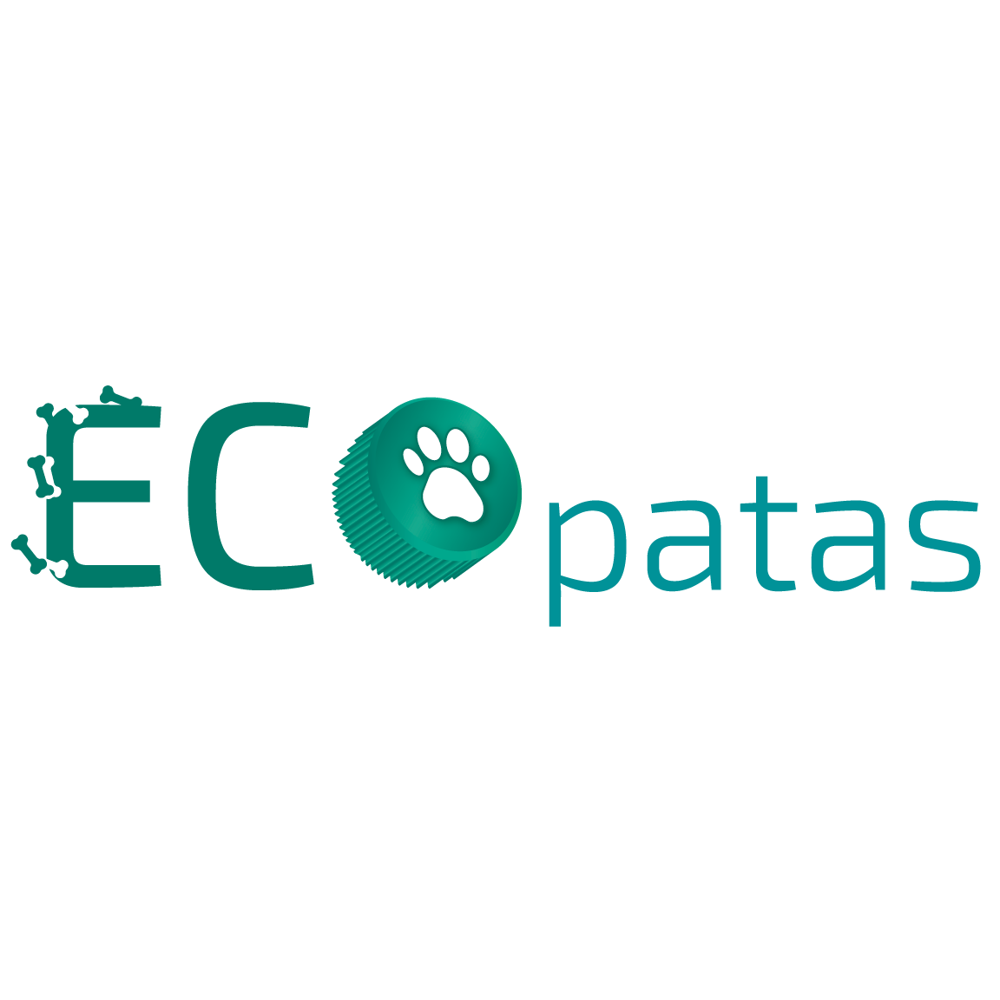

Ecopatas
Uma ONG de arrecadação de tampas plásticas e de lacres de alumínio para conservação do meio ambiente e castração de animais
abandonados.
Para doar para a ONG e colaborar com a causa, tragam tampinhas de garrafa de plástico e lacres de alumínio. A ONG trabalha com
reciclagem somente das tampinhas e lacres, não garrafas inteiras. (Trazer as tampinhas separadas por cores de preferência)
Informações sobre a ONG:
Endereço: Av. Cangaíba - Penha de França, São Paulo - SP, 03730-040
Horários de Abertura: Apenas com agendamento.
Instagram: @ecopatas.sp
Facebook: ecopatas.sp